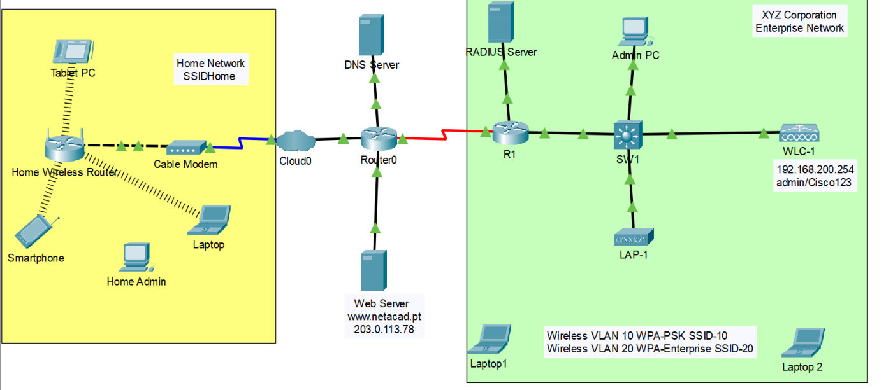
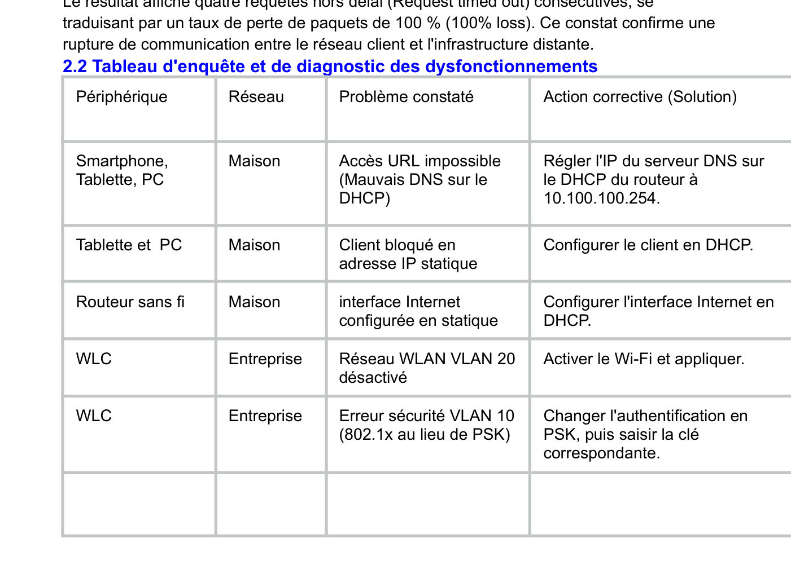
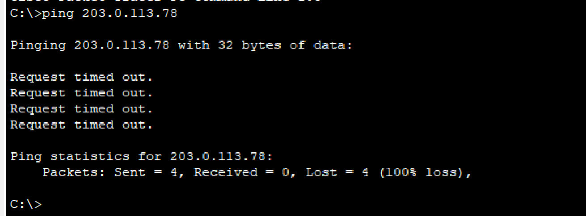
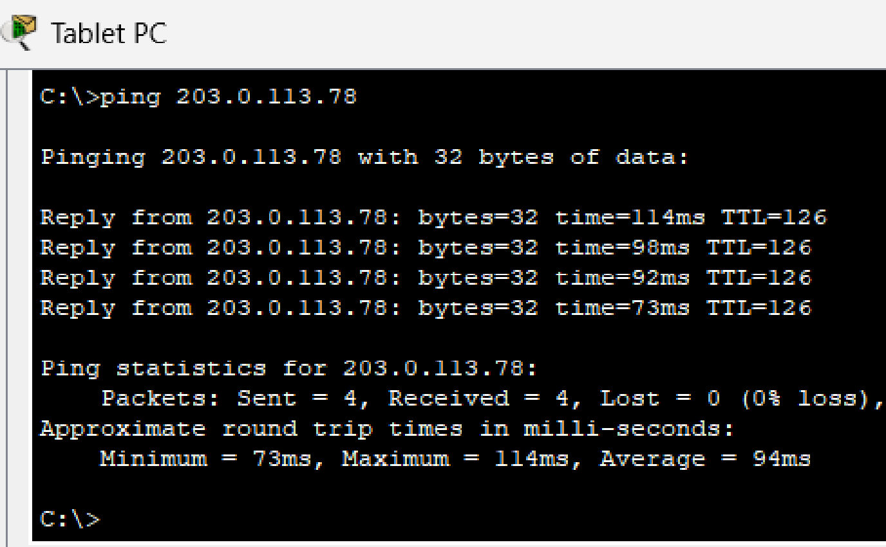
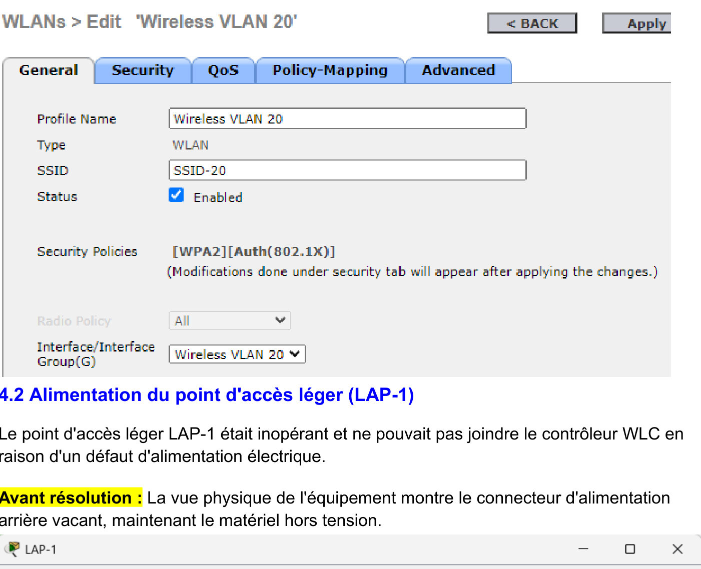
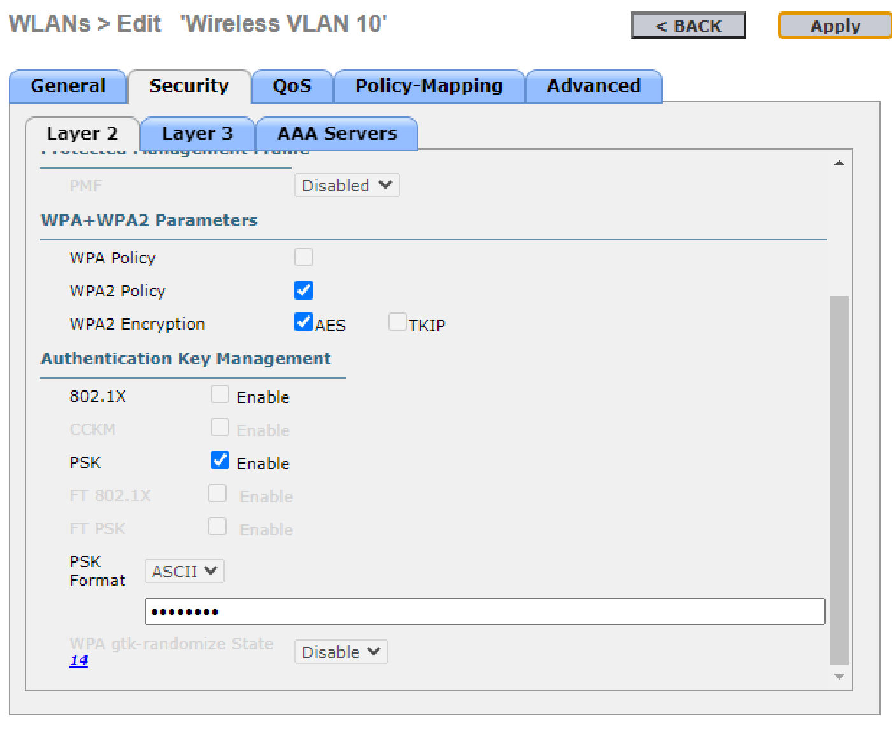
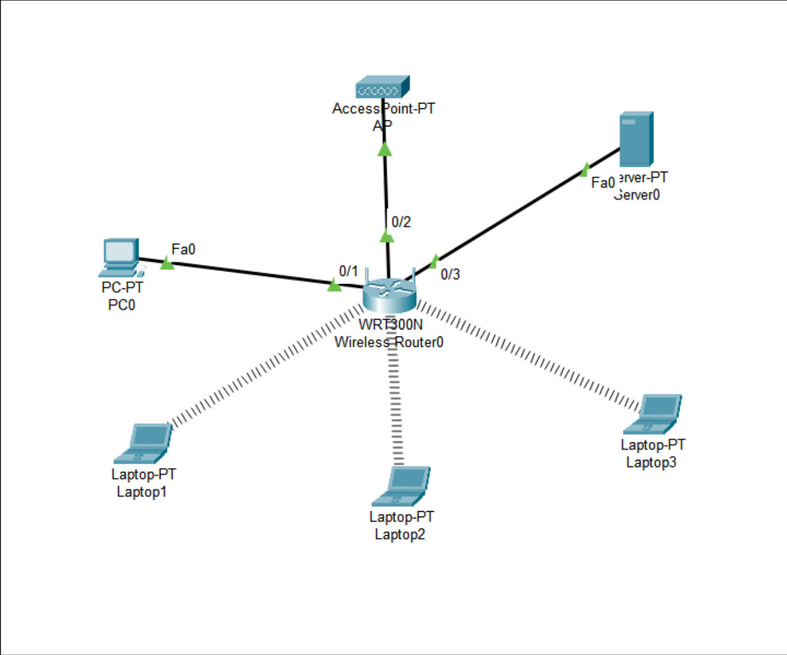
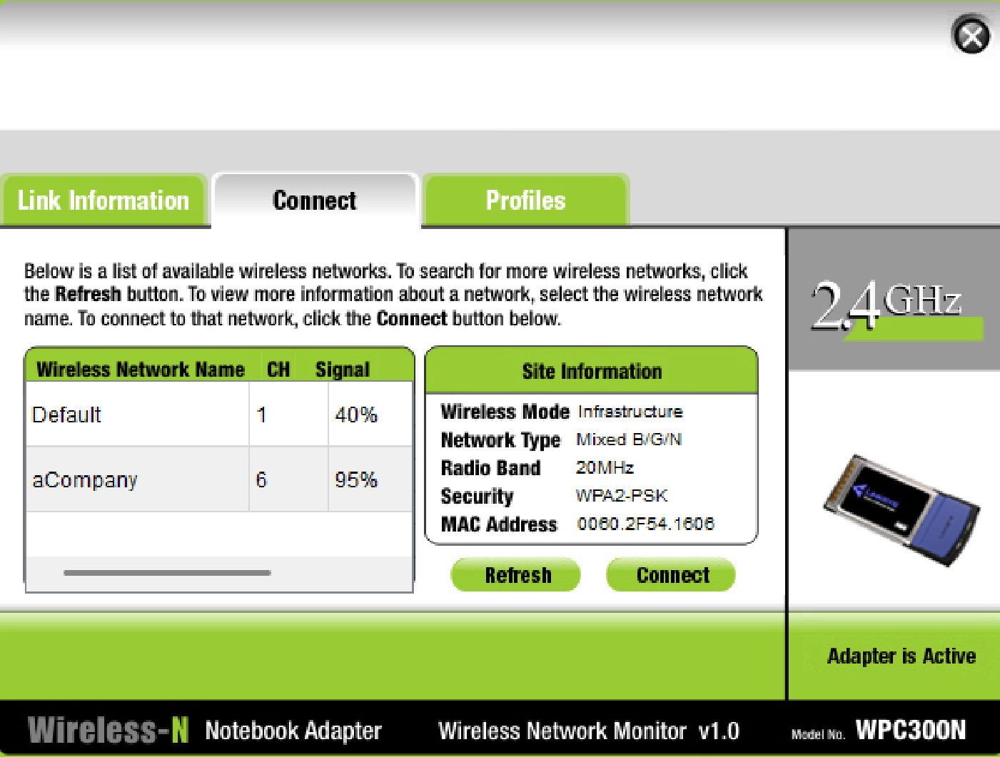

Wi-Fi avancé : configuration et dépannage de réseaux sans fil
Mener une enquête de dépannage méthodique sur une infrastructure hybride : réseau domestique d'un côté, réseau d'entreprise avec contrôleur Wi-Fi de l'autre.
Équipe : TP5 réalisé par Imane ABDOU (binôme avec FELIX Yann, auteur du TP6)

Contexte et objectif
Contexte
Aucun hôte des réseaux domestique et d'entreprise ne parvient à joindre le serveur Web www.netacad.pt : le premier ping révèle 100 % de perte.
Objectif
Identifier méthodiquement toutes les anomalies (adressage IP, DNS, DHCP, liaison WAN, sécurité Wi-Fi) et rétablir la connectivité de bout en bout.
Ma mission
Mon rôle
J'ai réalisé ce TP5 en suivant une démarche de diagnostic structurée :
- Test initial de connectivité et tableau d'enquête des dysfonctionnements
- Correction des pannes du réseau domestique (DNS, DHCP, interface Internet)
- Correction des pannes du réseau d'entreprise sur le contrôleur WLC et le point d'accès léger
- Validation finale par ping et accès Web, puis rédaction du compte rendu
Travaux réalisés
Diagnostic
Ping vers 203.0.113.78 en échec (100 % de perte) et recensement des problèmes par équipement dans un tableau d'enquête.
Réseau domestique
DNS corrigé sur le DHCP du routeur (10.100.100.250 → 10.100.100.254), tablette passée de statique à DHCP, interface Internet du routeur passée en DHCP.
Réseau d'entreprise
Activation du WLAN 20 sur le WLC-1, raccordement de l'alimentation du LAP-1, passage du WLAN 10 de 802.1X à PSK avec la bonne clé.
Validation
Renouvellement des baux (ipconfig /renew), ping réussi et affichage de la page www.netacad.pt sur chaque réseau.
Outils et technologies
Illustrations du projet
Images extraites du rapport. Cliquez pour agrandir.







Difficultés et solutions
Résultats obtenus
- Ping vers le serveur Web : 0 % de perte (≈ 94 ms côté maison, ≈ 73 ms côté entreprise)
- Résolution DNS et accès HTTP à www.netacad.pt rétablis sur les deux réseaux
- Tableau de diagnostic réutilisable comme méthode de dépannage
Compétences développées
Compétences
- Dépannage méthodique de réseaux sans fil
- Administration d'un contrôleur WLC
- Sécurité Wi-Fi (PSK, 802.1X)
- Services réseau (DHCP, DNS)
- Rédaction de comptes rendus techniques
Ce que ce projet m'a apporté
Ce TP a renforcé ma rigueur de diagnostic : observer, isoler, corriger, puis prouver par des tests, une méthode directement utile sur le terrain.
Envie d'aller plus loin ?
Le document complet détaille toutes les configurations, mesures et analyses.